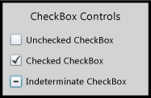
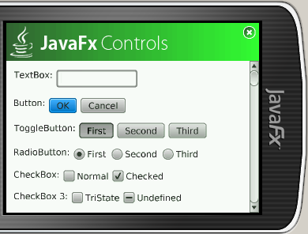
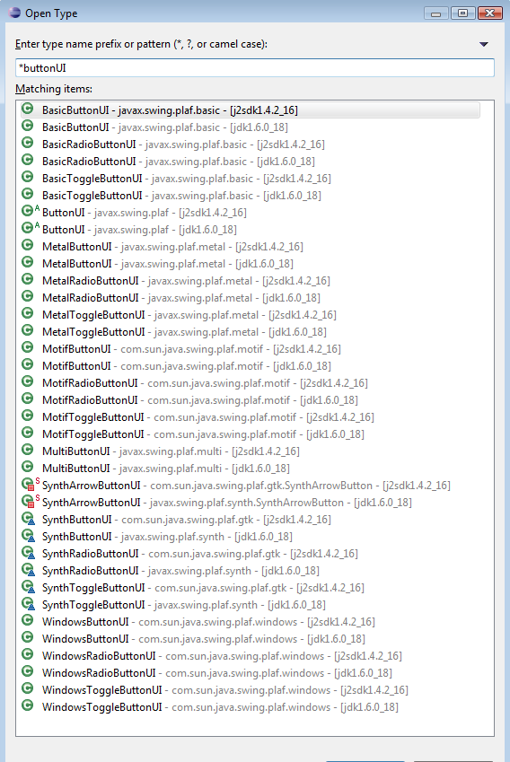
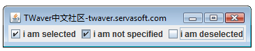

史上最潮的Swing三态CheckBox实现
http://twaver.servasoft.com/?p=495
 http://hiphotos.baidu.com/hxzon/pic/item/4ceeedf875d6474dd8f9fde3.jpg http://hiphotos.baidu.com/hxzon/pic/item/8468d3622faff39fe6113ae3.jpg

对于大部分近五年内新推出UI平台，如果再没将TristateCheckBox作为基础组件提供那就未免太落伍了，以上两个分别是 Silverlight和JavaFX的自带支持三态的CheckBox组件，当然你不能怪罪于Swing这个已经为人类服务的十几年，且依然在电信行业担当重任的平台没有在设计之初考虑到这样的功能，不过这也正好给了此文一个表现的机会。
实现三态的CheckBox最简单的解决方案就是code from scratch，完全自己绘制实现forget java.swing.JCheckBox，这个方案肯定可行不过缺点也是显而易见的，首先看看javax.swing.ButtonModel接口有多少model的逻辑需要考虑，再查查以下有多少ButtonUI在不同LookAndFeel你需要考虑绘制的风格一致性，如果你要做个通用的组件此路基本不通。
 http://hiphotos.baidu.com/hxzon/pic/item/1253d12a13c3336fd52af1e3.jpg
如果要兼顾各种LookAndFeel，并且考虑到用户还可能采用第三方的laf，合理的解决方案就不应该有硬编码的绘制逻辑。你可以注意到当我们 Press一个CheckBox的时候其实是有个三态的呈现效果，只不过当我们松手或鼠标移开后CheckBox才恢复正常状态，想想如果我们能“欺骗”CheckBox让其觉得自己一直是在Press状态下，那么那些各种各样的laf下的**ButtonUI岂不是都能自动显示我们要的效果。
于是沿着这个思路我们想到了前面提及的ButtonModel接口，所有状态逻辑都在于此，甚至你可以将其理解为个状态机，这样如果我们构造个符合我们需求逻辑的TristateButtonModel然后通过JCheckBox#setModel(ButtonModel newModel)设置岂不就可以了。
且慢你再看一样javax.swing.ButtonModel接口有多少函数要实现，这是有同学想到可以通过 JCheckBox#getModel()的到老的Model，然后采用Decorator设计模式对oldButtonModel进行包装是否就可以了，想到这里你基本修成正果了，这里有个哥们也用了Decorator这样的方式取得了真经。
在我看来Decorator设计模式是种由于语言不够灵活而产生的丑陋解决方案，如果old的实现有100个函数岂不wrapper也得一笔一划的去包装一百多个函数，Java虽然不够灵活不过还好JDK1.3就给我们留了个java.lang.reflect.Proxy类，能够让我们拦截接口的实例函数调用，以下我就不多说了，大家可以直接看代码或者直接改造到你的项目中使用，使用TWaver Java的同学比较幸运直接使用twaver.swing.TTristateCheckBox这个类即可。 http://hiphotos.baidu.com/hxzon/pic/item/abf3232da1b03e76359bf7e3.jpg

import java.awt.Graphics;
import java.lang.reflect.InvocationHandler;
import java.lang.reflect.Method;
import java.lang.reflect.Proxy;
import javax.swing.BoxLayout;
import javax.swing.ButtonModel;
import javax.swing.JCheckBox;
import javax.swing.JFrame;
import javax.swing.JPanel;
public class TristateCheckBox extends JCheckBox {
public final static int SELECTED = 1;
public final static int DESELECTED = 2;
public final static int NOTSPECIFIED = 3;
class ProxyHandler implements InvocationHandler {
public Object invoke(Object proxy, Method method, Object[] args)throws Throwable {
String methodName = method.getName();
if (isEnabled() && !isPainting && methodName.equals("setPressed")) {
boolean isPressed = ((Boolean) args[0]).booleanValue();
if (isPressed == false && buttonModel.isArmed()) {
nextState();
}
}
if (isPainting && state == NOTSPECIFIED) {
if (methodName.equals("isPressed")
|| methodName.equals("isArmed")) {
return Boolean.TRUE;
}
}
if (methodName.equals("isSelected")) {
if (state == SELECTED || state == NOTSPECIFIED) {
return Boolean.TRUE;
} else {
return Boolean.FALSE;
}
}
if (methodName.equals("setSelected")) {
if (Boolean.TRUE.equals(args[0])) {
setState(SELECTED);
} else {
setState(DESELECTED);
}
}
return method.invoke(buttonModel, args);
}
}
private boolean isPainting = false;
private ButtonModel buttonModel = null;
private int state = DESELECTED;
public TristateCheckBox() {
this(null);
}
public TristateCheckBox(String text) {
this(text, false);
}
public TristateCheckBox(String text, boolean isSelected) {
this(text, isSelected ? SELECTED : DESELECTED);
}
public TristateCheckBox(String text, int state) {
super(text, null, false);
this.buttonModel = this.getModel();
ButtonModel proxyModel = (ButtonModel) Proxy.newProxyInstance(
TristateCheckBox.class.getClassLoader(),
new Class[] { ButtonModel.class }, new ProxyHandler());
this.setModel(proxyModel);
this.setState(state);
}
public int getState() {
return state;
}
public void nextState() {
if (state == SELECTED) {
state = NOTSPECIFIED;
} else if (state == DESELECTED) {
state = SELECTED;
} else {
state = DESELECTED;
}
this.fireStateChanged();
}
public void setState(int state) {
this.state = state;
}
public void paintComponent(Graphics g) {
isPainting = true;
super.paintComponent(g);
isPainting = false;
}
public static void main(String args[]) throws Exception {
JFrame frame = new JFrame("TWaver中文社区-twaver.servasoft.com");
JPanel contentPane = new JPanel();
contentPane.setLayout(new BoxLayout(contentPane, BoxLayout.X_AXIS));
contentPane.add(new TristateCheckBox("i am selected", SELECTED));
contentPane.add(new TristateCheckBox("i am not specified", NOTSPECIFIED));
contentPane.add(new TristateCheckBox("i am deselected", DESELECTED));
frame.setContentPane(contentPane);
frame.setDefaultCloseOperation(JFrame.EXIT_ON_CLOSE);
frame.pack();
frame.setLocation(200, 200);
frame.setVisible(true);
}
}
另外Proxy.newProxyInstance估计大部分使用Java多年的人也未必熟悉，一方面Proxy只能代理接口无法对非接口的函数进行拦截，另外最主要的是aspect-oriented programming (AOP)的框架成出不穷，大家根本不需要知道和使用怎么古老且有诸多限制的Proxy类，不过对于Swing这种客户端使用来说，我觉得大家还是有有必要了解一下，再万不得已的情况下才引入其他第三方库来解决UI问题，否则为了些局部功能引入笨重的第三方库导致发布程序包太大反而得不偿失，这里不得不再夸一把TWaver，一个小小1m多的twaver.jar竟然包含了如此众多的易用且强大的组件。
这里附带个Proxy的使用例子，希望能帮助不熟悉的同学理解
import java.lang.reflect.InvocationHandler;
import java.lang.reflect.Method;
import java.lang.reflect.Proxy;
interface Interface_A{
public void do_A1();
public void do_A2();
public void do_A3();
}
interface Interface_B{
public void do_B1();
public void do_B2();
public void do_B3();
}
public class ProxyAnything implements InvocationHandler {
private Interface_A businessA;
private Interface_B businessB;
public ProxyAnything(){
this.businessA = new Interface_A(){
public void do_A1() {
System.out.println("doing A1");
}
public void do_A2() {
System.out.println("doing A2");
}
public void do_A3() {
System.out.println("doing A3");
}
};
this.businessB = new Interface_B(){
public void do_B1() {
System.out.println("doing B1");
}
public void do_B2() {
System.out.println("doing B2");
}
public void do_B3() {
System.out.println("doing B3");
}
};
}
public Object invoke(Object proxy, Method m, Object[] args) throws Throwable {
if(m.getDeclaringClass() == Interface_A.class){
if(m.getName().equals("do_A3")){
System.out.println("you can not invoke do_A3");
}else{
return m.invoke(this.businessA, args);
}
}
if(m.getDeclaringClass() == Interface_B.class){
System.out.println(m.getName() + " is called.");
return m.invoke(this.businessB, args);
}
return null;
}
public static void main(String[] args) throws Exception {
ClassLoader classLoader = ProxyAnything.class.getClassLoader();
Class[] interfaces = new Class[]{Interface_A.class, Interface_B.class};
InvocationHandler handler = new ProxyAnything();
Proxy proxy = (Proxy)Proxy.newProxyInstance(classLoader, interfaces, handler);
if(proxy instanceof Interface_A){
System.out.println("proxy instanceof Interface_A");
}
if(proxy instanceof Interface_B){
System.out.println("proxy instanceof Interface_B");
}
Interface_A a = (Interface_A)proxy;
Interface_B b = (Interface_B)proxy;
a.do_A1();
a.do_A2();
a.do_A3();
b.do_B1();
b.do_B2();
b.do_B3();
}
}